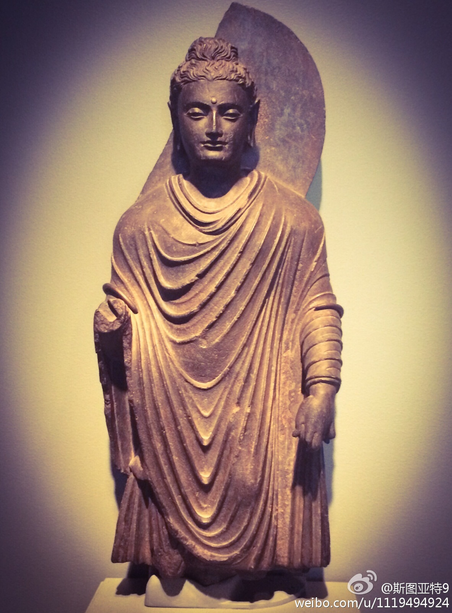
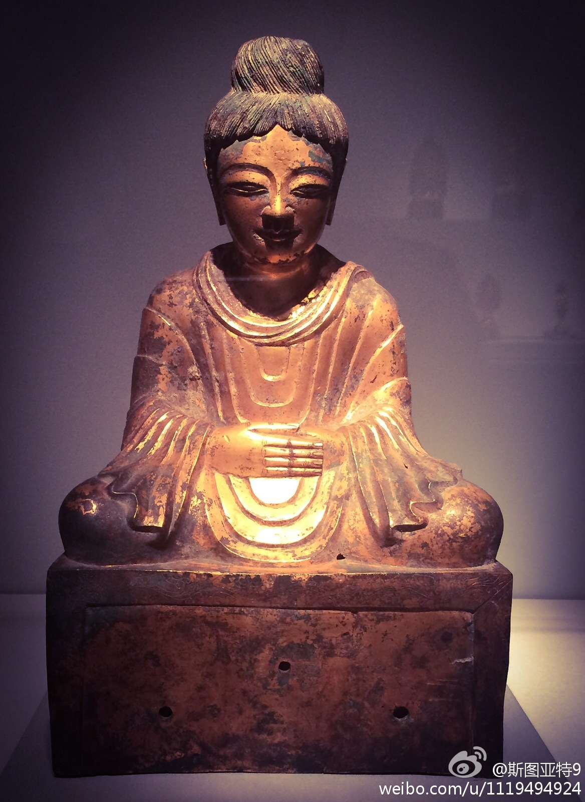

今天是旧金山亚洲艺术博物馆的免费日，就去参观了一下。发两张照片。第一张是公元一、二世纪的犍坨罗佛像（最早的佛像被认为来自犍坨罗，大约公元1世纪），能看出希腊雕像的感觉吗？后一幅号称是现存的中国最早的佛像，公元338年。 
又维基百科了半天，更新一下新学到的东西（也算是澄清）。希腊化佛教的确远在佛教传入中国前，但佛像的诞生在时间上是在传入中国之后的，佛教受到希腊哲学的影响也基本是在此之后。最早传入中国的佛教，大概是受到希腊化影响并不大的。希腊化佛教的影响应该是后来慢慢进入中国的。@斯图亚特9:佛教的希腊化远在佛教传入中国之前。大乘佛教则更像是佛教希腊化分支。希腊文化的艺术和文化的因素也随着佛教传入了中国。最早的佛像来自于希腊文化的影响（）；佛教说的“大智大慧”大概是学自希腊，和雅典娜女神一个路数；佛教传入中国后震撼中国思想界的宇宙观基本都源自希腊。